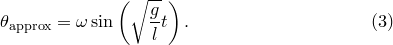
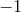

The following functions are provided for performing simple manipulations upon strings:
strcmp(s1,s2) returns zero if the strings s1 and s2 are the same, one if s1 should be placed after s2 in alphabetical sequence, minus one if s1 should be placed before s2 in alphabetical sequence.
strlen(s) returns the integer length of the string variable s. An error is returned if s is not a string variable.
strlower(s) returns a version of the string s in which all uppercase alphabetical characters are converted to lowercase characters.
strrange(s,i,j) returns a slice of the string , containing only the th through until the th characters of the string. If either or are negative, they are counted from the end of the string; for example,  refers to the last character of the string.
strupper(s) returns a version of the string s in which all lowercase alphabetical characters are converted to uppercase characters.
The following simple examples demonstrate the use of these functions:
pyxplot> x="It was the best of times, it was the worst of times"
pyxplot> print strlen(x)
51
pyxplot> print strrange(x,0,24)
It was the best of times
pyxplot> print strrange(x,-25,0)
it was the worst of times
pyxplot> print strupper(x)
IT WAS THE BEST OF TIMES, IT WAS THE WORST OF TIMES